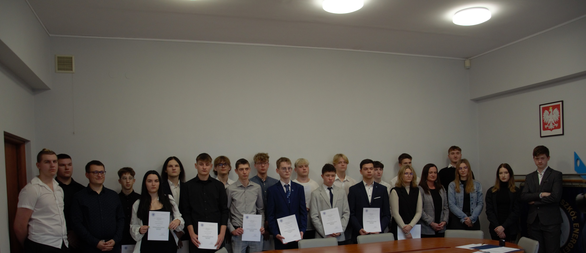

Był to wyjątkowo udany rok dla naszego samorządu. Nowi radni wnieśli świeżość i energię, dzięki czemu niemal co miesiąc organizowaliśmy wydarzenia, które urozmaicały szkolną codzienność. Za kulisami działo się jeszcze więcej – pracowaliśmy nad zmianami w regulaminie, dbaliśmy o Wasze prawa i wspieraliśmy uczniowskie inicjatywy. Możemy być dumni, że aż dwóch naszych radnych pełniło ważne funkcje: jeden jako szkolny Rzecznik Praw Ucznia, a drugi jako przedstawiciel w zespole parlamentarnym. To był rok pełen pracy, pomysłów i sukcesów – dziękujemy, że byliście z nami!
LISTOPAD
Zaprzysiężenie
24 radnych, w tym 17 nowo wybranych, złożyło ślubowanie przed Panią Dyrektor. Po jej krótkim przemówieniu odbyła się uroczysta, inauguracyjna sesja samorządu, podczas której wybraliśmy nowe władze i omówiliśmy kluczowe sprawy dotyczące szkoły.

GRUDZIEŃ
Mikołajki
W mikołajkowym orszaku odwiedziliśmy SP nr 69 oraz Przedszkole nr 33, niosąc radość najmłodszym. O 11:30 rozpoczęliśmy świąteczne obchody w naszej szkole, a godzinę później wręczyliśmy nagrody w turnieju Rummikuba. Mikołaj odwiedził klasy i nagrodził najbardziej kreatywnych – wszystko dzięki wsparciu Rady Rodziców. To był magiczny dzień!

STYCZEŃ
Szkolenie z Panią Rzecznik
Gościliśmy Panią Katarzynę Gębę – Rzecznika Praw Ucznia w Gdańsku. Uczestniczyliśmy w warsztatach, które pozwoliły nam rozwinąć kompetencje i pogłębić wiedzę o roli samorządu w szkole. Spotkanie było niezwykle inspirujące!

STYCZEŃ
Nowy przewodniczący
Podczas 3. sesji Rady Samorządu Uczniowskiego podziękowaliśmy Sarze Zaskórskiej z klasy 5P za jej zaangażowanie i lata pracy jako Przewodnicząca. Nowym przewodniczącym został Bartosz Zabrocki z klasy 3F.


LUTY
Kino i dyskoteka
W tym roku walentynki były wyjątkowe! Rano, wspólnie z SDKF-em, zaprosiliśmy Was na seanse filmowe, a wieczorem bawiliśmy się przy hitach lat 90. i 2000. Było romantycznie, filmowo i tanecznie!

KWIECIEŃ
Dni Otwarte
Z radością prezentowaliśmy naszą szkołę przyszłym uczniom. Przygotowaliśmy specjalne stanowiska, aby pokazać bogactwo naszej oferty i przyjazną atmosferę. Cieszymy się, że mogliśmy Was poznać i zainspirować do wyboru naszej szkoły.